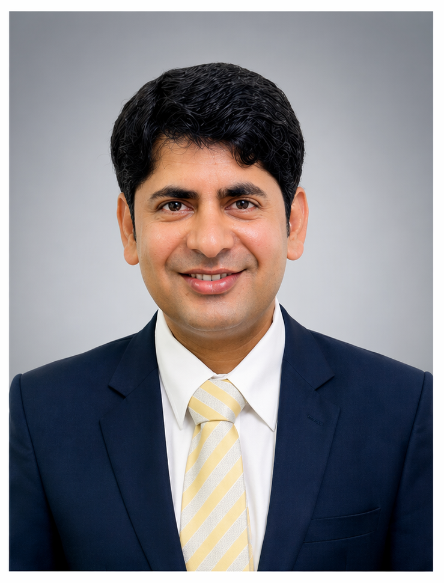

About Me
Coming from a small rural village of Ghotki and Growing up in a modest farming family in a resource-constrained environment shaped both my worldview and my commitment to agriculture. My journey has been driven by perseverance, faith, and a deep desire to contribute to farming communities through education, research, and agricultural extension.
My academic path began with public schooling in Sindh and later continued through Sindh Agriculture University, Tando Jam, where I completed my Bachelor of Science in Agriculture (Hons.) in 2015 and my Master of Science in Agricultural Extension in 2018. My master’s work on the diffusion and adoption of sugarcane production and protection technologies deepened my interest in farmer behaviour, innovation diffusion, and rural transformation.
Alongside my academic journey, I gained practical field exposure in the private agricultural sector through roles at Engro Fertilizer and Sayban International Pvt. Ltd., where I worked with farmers, promoted agricultural practices, and built a stronger understanding of real-world extension challenges. In 2018, I joined Sindh Agriculture University, Umerkot Campus, as a Lecturer in Agricultural Education Extension and served there until 2022.
In 2022, I was awarded the HEC Overseas Scholarship to pursue my PhD at Universiti Putra Malaysia. My doctoral research examines dairy farmers’ willingness to adopt recommended dairy farming practices in Tharparkar, Sindh, Pakistan. More broadly, I work on innovation diffusion, technology adoption, communication channels, extension systems, and sustainable rural livelihoods in climate-vulnerable and arid contexts.
Biography
specialize in Agricultural Education and Extension with experience spanning academia, field engagement, research design, data analysis, and scientific writing. My work brings together theory and practice by examining how farmers access knowledge, build trust in innovation, and respond to structural and behavioural constraints. I am especially interested in designing research and extension strategies that are practical, culturally grounded, and relevant to smallholder farming systems.
Quick Facts
- Current role: PhD Scholar, Universiti Putra Malaysia
- Previous role: Lecturer, Sindh Agriculture University, Umerkot Campus
- Core areas: Agricultural extension, technology adoption, rural development, food security
- Research settings: Smallholder farming systems, arid and climate-vulnerable regions
- Tools: SPSS, AMOS, R, survey design, instrument development, data visualization
- Open to: Research collaboration, speaking, training, consultancy, and academic networking
Research Focus
Diffusion of Innovations • Agricultural Technology Adoption • Dairy Farming Systems • Rural Development • Food Security • Communication Channels in Extension • Barrier Analysis • Survey & Instrument Design • Smallholder Livelihoods • Sustainable Agriculture
Education
- PhD in Agricultural Education & Extension – Universiti Putra Malaysia, 2022–2026
- Master of Science in Agricultural Extension – Sindh Agriculture University, Tando Jam, 2017–2018
- Bachelor of Science in Agriculture (Hons.) – Sindh Agriculture University, Tando Jam, 2011–2015
Selected Professional Experience
- Lecturer, Agricultural Education Extension – Sindh Agriculture University, Umerkot Campus, 2018–2022
- Technical Sales Officer – Engro Fertilizer, 2017–2018
- Sales Officer – Sayban International Pvt. Ltd., 2015–2016
Awards, Scholarships & Recognition
- HEC Overseas Scholarship for PhD studies at Universiti Putra Malaysia
- HEC Need-Based Scholarship for master’s studies
- Prime Minister’s Laptop Award
- Ambassador of Postgraduate Students, Faculty of Agriculture, UPM (2024–2025)
- Second time-appointed Ambassador of Postgraduate Students, Faculty of Agriculture, UPM (2025–2026)
International Academic Exposure
My academic and professional journey has included international exposure in Malaysia, Indonesia, Singapore, China, Thailand, Japan, the United Arab Emirates, and Iraq. These experiences have broadened my understanding of agricultural systems, higher education, intercultural learning, and global research collaboration.
- Universitas Gadjah Mada, Indonesia – Graduate forum and summer course participation
- National University of Singapore – GYSS 2025 participation
- Huazhong Agricultural University, China – Summer school participation
- Chulalongkorn University, Thailand – Academic visit
- Kyushu University, Japan – JTW mobility exchange, 2025–2026